Nyari is a relatively new, plush, leafy upmarket estate along Red Hill Road that feeds onto Limuru Road. Nyari borders the even grander areas of Gigiri, Muthaiga and Runda to the North East and Kitisuru to its South...
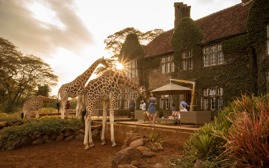
Karen
Karen is one of the oldest residential areas in Nairobi, said to have been named after Karen Blixen, the Danish writer of Out of Africa, whose farm originally covered the area. Karen offers a blend...
Gigiri
Gigiri, a close neighbor to Runda and Muthaiga, has been given 5-star rating by Suam . Separated from Nairobi city centre by the 2,500-acre Karura Forest and several low, wooded hills...
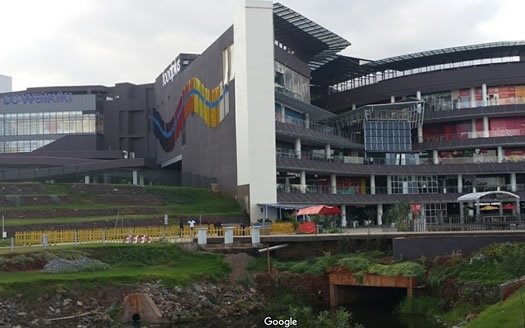
Runda
Once a coffee farm, Runda has been transformed to a high-end housing estate over the last 30 years. Demand for elite houses came after the UNEP headquarters was built in Gigiri...
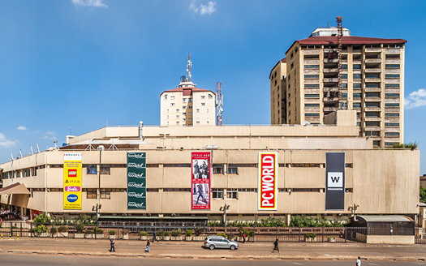
Kilimani
Kilimani is a convenient prime residential area about 10 minutes away from the city centre. It houses mainly maisonettes and apartments and is quickly coming up as a prime commercial zone as well...
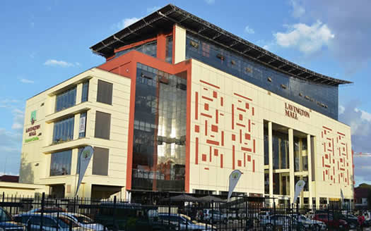
Lavington
Lavington is a middle to high income residential suburb some 7 km north west of the City centre. The area is home to many large villa residences and beautiful gardens. Most trees have been untouched...
Muthaiga
To date, the Muthaiga area is Nairobi’s long-established Beverly Hills, where American celebrities hail from, lying around along shady roads that wind through lush wooded hills ...
Upper Hill
Upper Hill is quickly becoming the prime office location in Nairobi. Many businesses have relocated to the area from the Central Business District, with companies now building their office headquarters in...
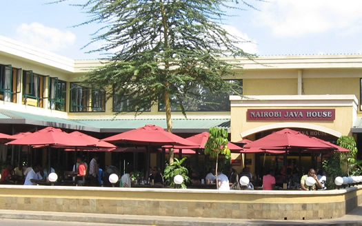
Kileleshwa
Kileleshwa is a quiet, upper-middle income, leafy suburb west of Nairobi City. The landscape is a mixture of aging, colonial houses built in the 1950’s and 1960’s and modern apartments and townhouses...
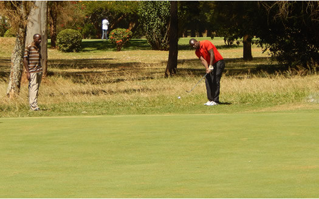
Loresho
Developed since 1967 on former coffee farms, Loresho is a leafy green up-market well-developed residential suburb to middle to upper class Kenyans and expatriates. It is luxurious in the vein of Lavington and Muthaiga...
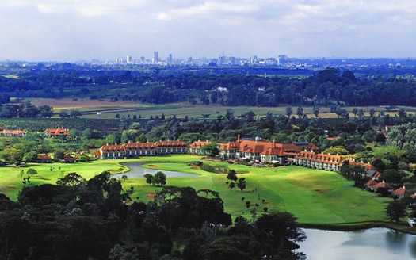
Ridgeways
Set between Muthaiga and Thika Road, Ridgeways, including the Garden Estate, is set beside the Kiambu Road, on the outskirts of Nairobi. Mostly surrounded by the Karura forest...
Spring Valley
Slightly more understated than Muthaiga, Spring Valley is an exclusive low-density suburb distinguished by contemporary homes in well-treed compounds. As a middle and high income purchaser...
Central Business District
Nairobi city is popularly referred to as ‘the green city in the sun’ and the Central Business District is the heart beat of the city. From humble beginnings in the late 1890’s, Nairobi city...
Limuru
A town located with Kiambu County which is located on the eastern edge of the Great Rift Valley, 40KM from Nairobi CBD. It was also known as “white highlands” during colonial times....
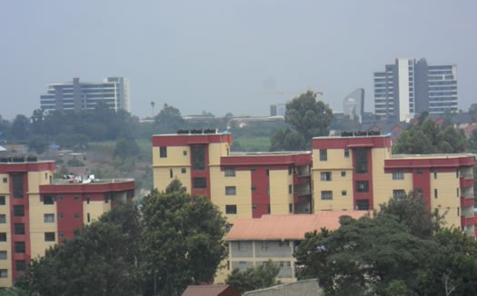
Ruaka
Ruaka is a town in Kiambu County, Northwest of Nairobi at the western end of the Northern Bypass. It neighbours small towns like Gigiri which hosts the UNEP Headquarters, Rosslyn Estate, and Runda Estate and close to Muthaiga...
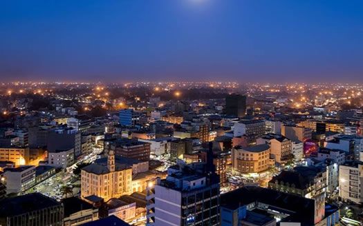
Thika
Situated 42 KM North East of Nairobi. Thika is an industrial town in Kiambu County. A rapidly growing town due to the many industries and learning institutions in the town. It has great scenery such as Chania falls...
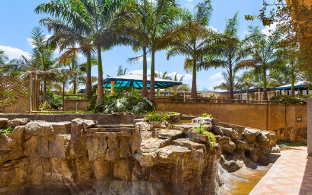
Ruiru
Ruiru is a town in Kiambu County, located within 3KM of Nairobi boundary and about half a Kilometre from Kenyatta University main campus. It is connected by both rail and road....
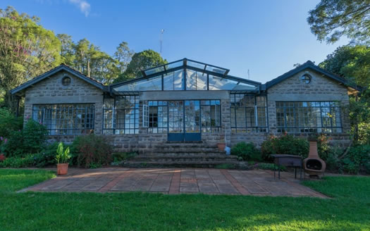
Tigoni
Tigoni town is a small town in Limuru within Kiambu County, 30kms from Nairobi city. The town is an ancient one developed by white farmers who resided in Limuru during colonial times in Kenya....
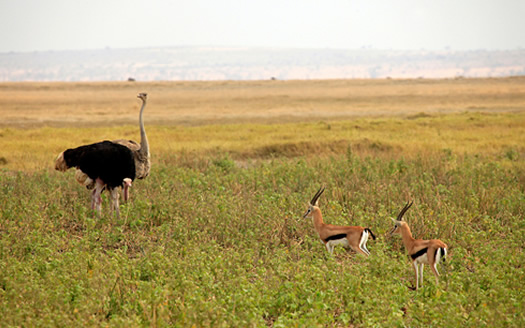
Kitengela
Kitengela town is located in Kajiado County south of Nairobi capital. The town is situated about 30 KM from central business district. Kitengela promises to be the best residential in Nairobi...
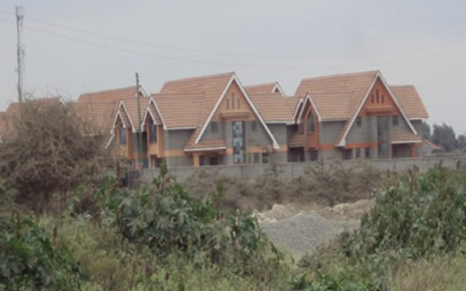
Mlolongo
Mlolongo town is located along Mombasa Road approximately 19KM from Nairobi Central Business District. The town borders with the nearby suburb areas like Syokimau and Kitengela...
Athi River
Athi River is a town in Machakos County. The town owes its name to Athi River which passes through. The town lies about 29.8 KM to the south of Central Business District. It’s serene atmosphere...
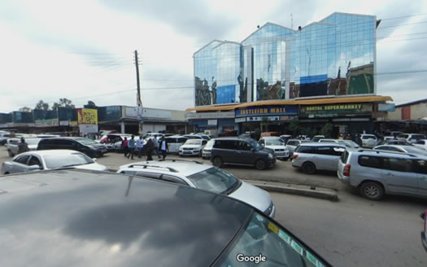
Eastleigh
Eastleigh is suburb located about 6.8KM to the East of Nairobi CBD. The estate also referred to as “Dubai” is the economic hub of East Africa due robust business. The town is characterized by numerous shopping malls along the first avenue...
Juja
Juja town is located along the Thika superhighway it’s approximately 30KM North of Nairobi CBD. Juja is considered the home for Jomo Kenyatta University a Higher learning Institution...
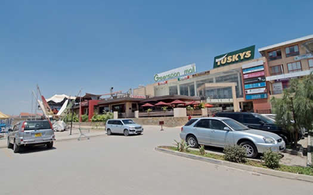
Donholm
Donholm is a middle class residential area located in the Eastland’s part of Nairobi. Donholm environs include Kayole, Umoja and Buruburu. It has major malls that include such Eastgate ...
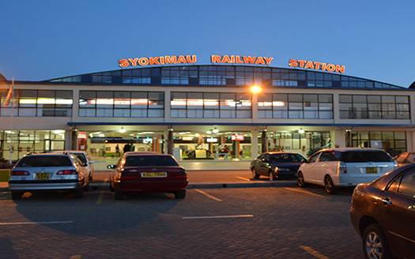
Syokimau
Syokimau is an affluent residential area in Machakos County just South of Nairobi along the Nairobi Mombasa Highway and very adjacent to the Jomo Kenyatta International Airport...
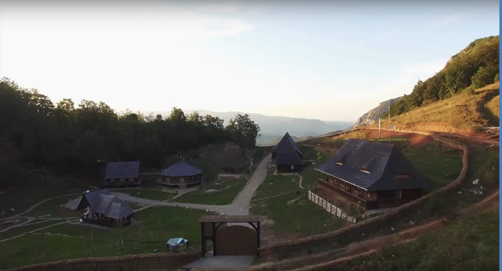
Ongata Rongai
Ongata Rongai popularly known by the short form Rongai is a middle class town located 17km south of Nairobi CBD and west of Ngong Hills in Kajiado County. Rongai was majorly a Maasai....
Ngong Town
Ngong town is a residential area located averagely 30kms Southwest of Nairobi CBD along the Great Rift Valley overlooking the Nairobi National Park Kajiado County. Ngong town is surrounded by Karen, Kitengela...
Kiserian
Kiserian town is a Maasai town located on the foot of Ngong Hills along Magadi Road in the Great Rift Valley in Kajiado County. Due to its closeness to Ngong hills Kiserian town is climatically....